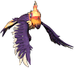
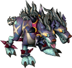

雪人
沉重的債務
- 履歷 無
- 開始條件 無
- 內容 和旅館的里奇亞說話
- 獎勵品 尖帽子 1個
聽完話,和銀行的格雷迪森說話,再和旅館的里奇亞說話,老實回答沒有付10萬。
這樣之後在沒有持有尖帽子的狀態下和里奇亞說話,
就可以用1,000glod購買尖帽子
製作雪人
- 履歷 無
- 開始條件 無
- 內容 持有[水桶]1個和[雪球]25個,點擊可製作的場所。
點擊已做好的雪人時出現[距離太遠]的雪人所在位置就是可製作雪人的場所。 - 獎勵品 極罕見會獲得下列道具。
彩紙 1個
製作雪人
- 履歷 無
- 開始條件 無
- 內容 持有[毛茸茸帽子]1個和[雪球]25個,點擊可製作的場所。
點擊已做好的雪人時出現[距離太遠]的雪人所在位置就是可製作雪人的場所。 - 獎勵品 極罕見會獲得下列道具。
白雪 1個
製作雪人
- 履歷 無
- 開始條件 無
- 內容 持有[絲質高帽]1個和[雪球]25個,點擊可製作的場所。
點擊已做好的雪人時出現[距離太遠]的雪人所在位置就是可製作雪人的場所。 - 獎勵品 極罕見會獲得下列道具。
金色噴霧 1個
製作雪人
- 履歷 無
- 開始條件 無
- 內容 持有[尖帽子]1個、[樹枝]1個和[雪球]25個,點擊可製作的場所。
點擊已做好的雪人時出現[距離太遠]的雪人所在位置就是可製作雪人的場所。 - 獎勵品 極罕見會獲得下列道具。
鞭炮[愛心連鎖・藍] 1個
鞭炮[愛心連鎖・紅] 1個
鞭炮[愛心連鎖・綠] 1個
丟雪球
- 履歷 無
- 開始條件 無
- 內容 製作1個雪人
- 獎勵品 丟雪球 1個
聖誕老人服
- 履歷 不明
- 開始條件 無
- 內容 和樹木守衛(70.58)說話爬上樹,在樹上施放鞭炮[愛心連鎖]
- 獎勵品 可以用250萬Glod向聖誕老人購買下列道具,不過・・・
男用聖誕服 1個
女用聖誕服 1個
不知道是不是Bug,即使沒有持有250萬Glod,被詢問的選項回答「YES」
似乎也能購買。※已確認持有50萬Glod也能購買
樂譜
樂譜
- 履歷 不明
- 開始條件 無
- 內容 和拜辛(71.89)說話
- 獎勵品 從下列道具中隨機獲得1個。
銀鈴樂譜[第1首] 1個
銀鈴樂譜[第2首] 1個
銀鈴樂譜[第3首] 1個
銀鈴樂譜[第4首] 1個
銀鈴樂譜[第5首] 1個
銀鈴樂譜[第6首] 1個
稍微製作雪人
- 履歷 不明
- 開始條件 無
- 內容 和塔波爾斯(77.60)說話,製作未滿10個(確認為5個)雪人後向塔波爾斯報告。
※和塔波爾斯說話的時點個數會重置,請注意 - 獎勵品 舊赫爾莉菈 1個
舊瑪娜莉菈 1個
樂譜7
- 履歷 不明
- 開始條件 無
- 內容 和塔波爾斯(77.60)說話,製作10個雪人後向塔波爾斯報告。
※和塔波爾斯說話的時點個數會重置,請注意 - 獎勵品 銀鈴樂譜[第7首] 1個
樂譜8
- 履歷 不明
- 開始條件 無
- 內容 和塔波爾斯(77.60)說話,製作20個雪人後向塔波爾斯報告。
※和塔波爾斯說話的時點個數會重置,請注意 - 獎勵品 銀鈴樂譜[第8首] 1個
愛心煙火3種
- 履歷 不明
- 開始條件 無
- 內容 和塔波爾斯(77.60)說話,製作50個雪人後向塔波爾斯報告。
※和塔波爾斯說話的時點個數會重置,請注意 - 獎勵品 鞭炮[愛心・藍] 5個
鞭炮[愛心・紅] 5個
鞭炮[愛心・綠] 5個
百雪祇得樂譜
- 履歷 不明
- 開始條件 無
- 內容 和塔波爾斯(77.60)說話,製作100個雪人後向塔波爾斯報告。
※和塔波爾斯說話的時點個數會重置,請注意 - 獎勵品 百雪祇德樂譜 1個
 銀鈴樂譜
銀鈴樂譜
- 履歷 不明
- 開始條件 持有樂譜[第1首]～[第8首]
- 內容 和拜辛(71.89)說話,交出5萬glod和條件的物品,領取「銀鈴樂譜」
任務的流程是
1．和萊比亞城鎮的拜辛(71.89)說話。
2．依序踩拜辛指定的聲音。
3．向拜辛報告就能拿到「銀鈴樂譜1～6」。
4．和塔波爾斯(77.60)說話並製作雪人,就能拿到「銀鈴樂譜7、8」。
5．「銀鈴樂譜1～8」各集齊1個後和拜辛說話,請他做成「銀鈴樂譜」。
6．和旅館的巴哈姆特說話,請他做成「聖誕頌歌鼓手少年的樂譜」。
7．和雜貨店的里柯爾說話,領取「雙屬性腰帶」。 - 提示 拜辛指定的聲音對應如下。
砰砰啵～嗯 ＝ 風琴的聲音
咚咚恰 ＝ 鼓的聲音
啪啦叭叭 ＝ 小號的聲音
如果拜辛
指定了砰砰啵～嗯、咚咚恰、砰砰啵～嗯、咚咚恰、咚咚恰、啪啦叭叭
的話
風琴→鼓→風琴→鼓→鼓→小號
的順序踩地面上的[♪]標記,聽音樂後和拜辛說話就成功。
如果中途踩錯別的就失敗。再次和拜辛說話可以重新挑戰。
偶爾也有只踩[♪]標記就能拿到樂譜的情況。 - 獎勵品 銀鈴樂譜 1個
※雙擊可以聽音樂,但使用一次就會消失,請注意。
 敲聖誕鼓的少年樂譜
敲聖誕鼓的少年樂譜
- 履歷 沒有也可以(?)
- 開始條件 持有「銀鈴樂譜」
- 內容 和旅館的巴哈姆特說話,交出條件的物品
- 獎勵品 聖誕頌歌鼓手少年的樂譜 1個
雙屬性 插槽腰帶
- 履歷 不明
- 開始條件 持有「聖誕頌歌鼓手少年的樂譜」
- 內容 和雜貨店的里柯爾說話,交出條件的物品和「插槽腰帶[2]」。
- 獎勵品 從下列道具中隨機獲得1個。
戴姆腰帶[2] 1個
吉哥爾腰帶[2] 1個
凱隆腰帶[2] 1個
格蘭腰帶[2] 1個
雙屬性光 插槽腰帶
- 履歷 不明
- 開始條件 持有「歐爾哈奈爾」
- 內容 向雜貨店的里柯爾丟入1個歐爾哈奈爾,交出雙屬性插槽腰帶(○○腰帶[2])和3個歐爾哈奈爾、30張梅札琳的皮、20個冰角。
材料不齊的話,會告訴你材料的種類和個數,但會浪費1個歐爾哈奈爾,請小心。 - 獎勵品 與屬性插槽腰帶同屬性的雙屬性光插槽腰帶
不過,有時會失敗。
另外,持有「百雪祇德樂譜」的話成功機率會增加(消耗)。
雙重神聖戴姆腰帶 1個
雙重神聖吉哥爾腰帶 1個
雙重神聖凱隆腰帶 1個
雙重神聖格蘭腰帶 1個
雷尼亞民的記憶
- 履歷 不明
- 開始條件 不明 推薦等級標示為37
※97聖、79修、63魔、93魔、89盜、50盜、48聖的驗證結果：瑪魯雷斯無反應→無法進行任務
42聖的驗證結果：與瑪魯雷斯的對話成立→確認任務進行。 - 內容 和萊比亞雜貨店的雷尼亞民說話。
和魔窟入口的瑪魯雷斯說話。
被告知要尋找波特？。
（H16 11/29 未翻譯）
（※以等級42聖職者進行任務時,(※H18.12.13現在)
與瑪魯雷斯對話後,任務名稱轉為「雷尼亞民的記憶-2」。
內容變成“奪回被達斯特偷走的雷尼亞民的物品”。以下調查中。） - 報賞 不明
溫特安塔貢製作
- 履歷 得知冬季安塔岡製造法(※接受洛爾朗的任務時即取得)
- 開始條件 無
- 內容 和洛爾朗［萊比亞城鎮(133.27)］說話,接受各種委託。
- 必要道具
| 道具 | 數量 | 掉落 |
 迪斯眼珠 迪斯眼珠 | 5 | 盧亞斯森3的札斯特 |
 諾肯藥草袋 諾肯藥草袋 | 1 | 盧亞斯森5､6和加利卡拉森5的伐木諾肯 |
 魔法之花 魔法之花 | 5 | 魔界村森林的曼多拉 |
 毛皮C 毛皮C | 10 | 伊卡洛斯食蟲植物、草原、火山2的劍齒虎系 |
| 毛皮D | 10 | 伊卡洛斯卵巢的帕帕梅馬德 |
 利爾德之木 利爾德之木 | 10 | 盧亞斯森5､6和加利卡拉森5的伐木諾肯 |
 伊瑟托爾 伊瑟托爾 | 10 | 萊比亞城鎮的雪中 (僅任務中可取得) |
| 格羅德 | 495,000 | |
 米魯里斯傳送門 米魯里斯傳送門 | 4 | 移動用傳送門(※為了順利進行) |
| 盧亞斯傳送門 | 7 | |
| 斯歐米傳送門 | 2 | |
| 魔界村傳送門 | 2 | |
 伊卡洛斯傳送門 伊卡洛斯傳送門 | 2 | |
| 迪格邦克閘門 | 2 | |
| 卡萊瓦拉傳送門 | 3 | |
| 魔界村森林傳送門 | 1 | |
| 萊貝雅傳送門 | 10 |
- 任務流程
- 1.冬季帽
⇒順序
⇒順序- 1-1.德爾比內藥水店 賽妮蘿 ［萊比亞城鎮(45,80)］
- 1-2.米魯里斯雜貨店 特依普 ［米魯里斯城鎮(35,35)］
・支付5,000Glod,領取「剪皮剪刀與尼龍」 - 1-3.米魯里斯武器店 路易斯 ［米魯里斯城鎮(30,61)］
- 1-4.米魯里斯・斯歐米・盧亞斯森
・打倒5隻迪斯特(迪斯特討伐) - 1-5.米魯里斯武器店 路易斯 ［米魯里斯城鎮(30,61)］
・領取「毛皮A」 - 1-6.德爾比內藥水店 賽妮蘿 ［萊比亞城鎮(45,80)］
・交出「剪皮剪刀與尼龍」和「毛皮A」,
領取「冬季帽」
- 2.冬季護目鏡
⇒順序
⇒順序- 2-1.里庫司雜貨店 里庫司 ［萊比亞城鎮(98,85)］
- 2-2.盧亞斯雜貨店 希德 ［盧亞斯城鎮(113,98)］
- 2-3.盧亞斯藥水店 福琳 ［盧亞斯城鎮(64,104)］
- 2-4.準備道具
・從盧亞斯森3的札斯特掉落5個「迪斯眼珠」
・從盧亞斯森5､6的伐木諾肯掉落1個「諾肯藥草袋」 - 2-5.盧亞斯藥水店 福琳 ［盧亞斯城鎮(64,104)］
・交出5個「迪斯眼珠」・1個「諾肯藥草袋」,
領取「艾茲帕布藥水」 - 2-6.盧亞斯雜貨店 希德 ［盧亞斯城鎮(113,98)］
・交出「艾茲帕布藥水」,領取「安全放大鏡」 - 2-6.里庫司雜貨店 里庫司 ［萊比亞城鎮(98,85)］
・交出「安全放大鏡」和5,000Glod,領取「冬季護目鏡」
- 3.冬季圍巾
⇒順序
⇒順序- 3-1.德爾比內藥水店 賽妮蘿 ［萊比亞城鎮(45,80)］
- 3-2.魔界村旅館 依茲米 ［魔界村城鎮(73,108)］
- 3-3.魔界村藥水店 薩卡 ［魔界村城鎮(129,117)］
- 3-4.斯歐米森4
・打倒10隻絨毛鼠 - 3-5.魔界村藥水店 薩卡 ［魔界村城鎮(142,25)］
・領取「科布特毛線球」 - 3-6.魔界村旅館 依茲米 ［魔界村城鎮(134,113)］
・交出「科布特毛線球」 - 3-7.魔界村森林
・從曼多拉掉落5個「魔法花」 - 3-8.魔界村旅館 依茲米 ［魔界村城鎮(134,113)］
・交出5個「魔法花」和1萬Glod,領取「冬季圍巾」
- 4.冬季手套
⇒順序
⇒順序- 4-1.德爾比內藥水店 賽妮蘿 ［萊比亞城鎮(45,80)］
- 4-2.米魯里斯防具店 羅賓 ［米魯里斯城鎮(21,60)］
- 4-3.魔窟19,22,24（※瘋狂模式不計算）
・打倒10隻亨斯塔 - 4-4.米魯里斯防具店 羅賓 ［米魯里斯城鎮(21,60)］
・領取「冬季手套手冊」 - 4-5.米魯里斯藥水店 海路娜 ［米魯里斯城鎮(87,34)］
→支付5萬Glod 或
→打倒米魯里斯森 20隻普拉科
・領取「毛皮B」
- 5.冬季套裝
⇒順序
⇒順序- 5-1.德爾比內藥水店 賽妮蘿 ［萊比亞城鎮(45,80)］
・交出「冬季手套手冊」和「毛皮B」 - 5-2.盧亞斯武器店 魯克 ［盧亞斯城鎮(95,135)］
・領取「舊套裝書」 - 5-3.加利卡拉武器店 阿爾雷 ［加利卡拉城鎮(118,60)］
・支付5萬Glod,領取「冬季套裝書」 - 5-4.盧亞斯武器店 魯克 ［盧亞斯城鎮(95,135)］
- 5-5.盧亞斯旅館 貝伊諾 ［盧亞斯城鎮(89,76)］
・支付2萬Glod,領取「冬季背包書」 - 5-6.伊卡洛斯食蟲
・從劍齒虎掉落10張「毛皮C」 - 5-7.盧亞斯武器店 魯克 ［盧亞斯城鎮(95,135)］
・交出「冬季套裝書」、「冬季背包書」、
10張「毛皮C」
- 5-1.德爾比內藥水店 賽妮蘿 ［萊比亞城鎮(45,80)］
- 6.冬季靴子
⇒順序
⇒順序- 6-1.德爾比內藥水店 賽妮蘿 ［萊比亞城鎮(45,80)］
・領取「冬季手套」 - 6-2.伊卡洛斯武器店 穆卡 ［伊卡洛斯城鎮(70,100)］
- 6-3.魔窟7,10,12
・打倒20隻比烏塔 - 6-4.伊卡洛斯武器店 穆卡 ［伊卡洛斯城鎮(70,100)］
・領取「冬季靴子書」 - 6-5.伊卡洛斯草原
・從帕帕梅馬德掉落10張「毛皮D」 - 6-6.德爾比內藥水店 賽妮蘿 ［萊比亞城鎮(45,80)］
・交出「冬季靴子書」、10張「毛皮D」 - 6-7.盧亞斯武器店 魯克 ［盧亞斯城鎮(95,135)］
・支付5萬Glod,領取「冬季套裝」
- 6-1.德爾比內藥水店 賽妮蘿 ［萊比亞城鎮(45,80)］
- 7.冬季支柱・冬季板甲
⇒順序
⇒順序- 7-1.德爾比內藥水店 賽妮蘿 ［萊比亞城鎮(45,80)］
・領取「冬季靴子」 - 7-2.歐貝因武具店 歐貝因 ［萊比亞城鎮(91,71)］
- 7-3.斯歐米武器店 霍比 ［斯歐米城鎮(45,60)］
・支付3萬Glod,領取「阿爾馬農」 - 7-4.萊比亞城鎮
・從雪中掉落10個「伊塞特爾」(※很難掉) - 7-5.歐貝因武具店 歐貝因 ［萊比亞城鎮(91,71)］
・交出「阿爾馬農」、10個「伊塞特爾」 - 7-6.盧亞斯森5、盧亞斯森6
・從伐木諾肯掉落10個「里爾德木」 - 7-7.盧亞斯防具店 魯德 ［盧亞斯城鎮(95,135)］
・交出10個「里爾德木」和2萬Glod,領取「高壓縮板」 - 7-8.萊比亞武具店 歐貝因 ［萊比亞城鎮(91,71)］
・交出「高壓縮板」 - 7-9.萊比亞雜貨店 里庫司 ［萊比亞城鎮(98,85)］
・支付5,000Glod,領取「黏石」 - 7-10.萊比亞武具店 歐貝因 ［萊比亞城鎮(91,71)］
・交出「黏石」 - 7-11.萊比亞雜貨店 里庫司 ［萊比亞城鎮(98,85)］
・第1次詢問選Cancel,支付20萬Glod,領取「黏石」
※第1次詢問選OK的話,會回到上一項 - 7-12.萊比亞武具店 歐貝因 ［萊比亞城鎮(91,71)］
・交出「黏石」和5萬Glod,領取「冬季板甲」
- 7-1.德爾比內藥水店 賽妮蘿 ［萊比亞城鎮(45,80)］
- 8.冬季顏色
⇒順序
⇒順序- 8-1.萊比亞藥水店 賽妮蘿 ［萊比亞城鎮(45,80)］
- 8-2.加利卡拉藥水店 史丹 ［加利卡拉城鎮(50,60)］
- 8-3.魔界村森林
・在30分鐘時限內,
魔界村森林3的南瓜怪
和血腥南瓜怪各打倒10隻 - 8-4.加利卡拉藥水店 史丹 ［加利卡拉城鎮(50,60)］
・選擇顏色,
(棕色、天藍、粉紅、綠色、米色、紅色、灰色、 橘色、萊姆綠、黑色)
橘色、萊姆綠、黑色)
領取「冬季顏色」 - 8-5.德爾比內藥水店 賽妮蘿 ［萊比亞城鎮(45,80)］
・交出到目前為止收集的所有材料,
領取「冬季安塔岡」
- 褒賞品 冬季安塔岡
- 任務進行不順利時可以重置
冬季安塔岡重置NPC 莉瑟塔 ［萊比亞城鎮(74.82)附近］
火焰武器
- 履歷 不明
- 開始條件 無
・把想製作的職業的伊索尼亞丟給萊比亞武具店的NPC(歐貝因)就會發生事件。
・伊索尼亞需要2個。(不必勉強湊2個相同的伊索尼亞)
※第1個只是聽取烈焰武器的說明,所以任何伊索尼亞都可以。
從第2個開始,丟入想製作的烈焰武器的伊索尼亞即可。可以打開合成視窗。
・合成伊索尼亞上記載的烈焰武器材料、3個烈焰魯納、素材來製作。
・也可以製作自己職業以外的烈焰武器。
・材料不足的話任務失敗,材料道具會全部消失。
材料充足的話100％能製作。
・烈焰武器會以未鑑定狀態完成。
※放入材料道具時,如果放入超過必要的個數,多放的部分也會全部消失。
持有超過必要個數的話,最好先設定放入的個數再進行合成。
・依職業不同,裝備中可能無法使用主要技能・魔法。
※例：預言者→可以做雙重,裝備限制比前衛(NStr較高)的緣故,所以後衛能力值的
人在魔法使用限制以及裝備本身上都有制約- 注：放在擴充背包中的東西無法放入合成視窗。
烈焰武器材料
・製作各職業的烈焰武器所需的材料如下。
・合成除了以下素材外,還需要3個烈焰魯納。
| 劍魂 | 拳套之魂 | 短劍暗影 |  神聖扳手 神聖扳手 |  荷普利 荷普利 | 槍魂 | 謝耳曼箴言 | 劍卡之淚 |  彎刀之源 彎刀之源 | 素材 | |
| 戰士 | 30 | 4 | 13 | 5 | 2 | 5 | 1 | 2 | - |  長劍 長劍 |
| 修道士 | 4 | 30 | 10 | 10 | 2 | 3 | 1 | 2 | - |  霍薩拳套 霍薩拳套 |
| 盜賊 | 6 | 4 | 38 | 5 | 2 | 3 | 2 | 2 | - | 鹿 |
| 聖職者 | 1 | 1 | 2 | 40 | 10 | 1 | 5 | 2 | - |  木杖 木杖 |
| 魔術師 | 2 | 1 | 2 | 21 | 30 | 2 | 2 | 2 | - |  暗淡寶珠 暗淡寶珠 |
| 預言者 | 2 | 2 | 9 | 4 | 8 | 2 | 3 | 30 | - |  辛克萊雙重 辛克萊雙重 |
| 騎士 | 5 | 5 | 7 | 6 | 1 | 35 | 1 | 2 | - |  銀槍 銀槍 |
| 阿修羅 | 11 | 2 | 5 | 4 | 3 | 2 | 3 | - | 30 |  青銅彎刀 青銅彎刀 |
| 吟遊詩人 | 2 | 3 | 5 | 15 | 3 | 2 | 30 | 2 | - |  天使豎琴 天使豎琴 |
※武器的素材必須是商店販售的(已驗證…戰士・阿修羅)
火焰月光
烈焰魯納的做法如下。
- 把歐爾哈奈爾丟給萊比亞藥水店的賽妮蘿。
- 依以下規則一次合成。
結凍的魯西10個⇒魯納林1個
魯納林15個 ⇒光環魯納林1個
光環5個 ⇒光環魯納林1個
光環魯納林20個⇒烈焰魯納1個
烈焰魯納1個＝光環魯納林20個＝光環100個＝魯納林300個＝結凍的魯西3000個
例：魯納林330個＋光環20個(持有的材料)⇒烈焰魯納1個＋光環魯納林6個(完成的材料)
烈焰魯納需要3個,所以只用結凍的魯西來做的話需要9000個
製作雪人棒棒糖
- 履歷 無
- 開始條件 持有「方糖」和「食用色素18號」
- 內容 把2樣條件的物品交給旅館夏爾特(80.57)。
- 獎勵品 藍色糖棒 1個
※方糖→藍色糖棒的成功率～20％
開著道具欄說話的同時100％失敗？
→也有開著道具欄成功的例子。
特製鯊魚帽
- 履歷 無
- 開始條件 持有「藍色糖棒」
- 內容 和雜貨店里庫司說話並交出條件的物品,就可以用50萬購買鯊魚帽,但如果沒有持有50萬以上,藍色糖棒會浪費1個
- 獎勵品
♂ 秘密鯊魚 1個
♀ 神祕鯊魚 1個
獲得稱號[藍色糖棒狂熱者]
- 履歷 無
- 開始條件 無
- 內容・褒章 必要的東西：藍色糖棒1個
吃100個藍色糖棒,就會獲得稱號[藍色糖棒狂熱者]
HP全滿時會顯示「不需要再使用了。」,但吃的數量會被計算,藍色糖棒不會被消耗。
雙擊藍色糖棒100次,或設定到快捷鍵連按100次即可。
獲得稱號[嘟嘟嘟～饒舌歌手]
- 履歷 無
- 開始條件 獲得[藍色糖棒狂熱者]
- 內容・褒章 向里庫司丟入藍色糖棒就會發生饒舌對戰。
支付費用10,000glod後饒舌對戰開始。
※即使沒有支付費用,藍色糖棒也會被消耗
饒舌對戰的內容：在時限內正確輸入顯示的數字、字母、符號。
對戰有1～6階段,每回合字數會增加。
全部階段獲勝後,獲得稱號[嘟嘟嘟～饒舌歌手]。
※需要一定程度的打字能力。
※丟入之前應切換成半形英數。出現的數字・字母・符號為0～9、a～z、!、?
(「?」可能不會出現？調查中,若出現請編輯補充。m(_ _)m)
例）6階段 1ayj3!rm23wg6!42l2cq8!1pfa57!gs1n!
※對戰失敗時,如果還持有藍色糖棒
可以不付費用重新挑戰。
獲得稱號[饒舌大師TheMC]
- 履歷 不明
- 開始條件 獲得稱號[嘟嘟嘟～饒舌歌手]
- 內容・褒賞 向里庫司丟入藍色糖棒會再次發生饒舌對戰。
費用是50,000glod,對戰階段為1～7。
對戰內容與[嘟嘟嘟～饒舌歌手]相同。
饒舌對戰獲勝後獲得稱號[饒舌大師TheMC]。
成功後也能用相同內容挑戰。當然道具也會消耗。
阿斯蘭德遊戲
數字遊戲
- 履歷 不明
- 開始條件 從阿斯蘭德嚮導或數字遊戲服務員以30,000glod購買數字遊戲券
- 內容 和數字遊戲服務員說話,進入遊戲。
1.猜拳遊戲
輸了就結束
平手再戰
2.骰子遊戲
輸了就結束
平手回到1
3.數字 高/低遊戲
輸了回到2
4.算數遊戲
沒答對4題就結束
依1～4的順序連勝就能拿到獎品 - 褒賞品 從以下選1個。
1000 glod
30000 glod
60000 glod
90000 glod
兔耳 1個
魔法兔耳材料 1個
※對話記錄不會顯示報酬內容
※2011/9/21現在,褒章只有Glod。
嘟嘟遊戲
- 履歷 不明
- 開始條件 從阿斯蘭德嚮導或嘟嘟遊戲嚮導以50,000glod購買嘟嘟遊戲券
- 內容 和嘟嘟遊戲嚮導說話,進入遊戲。
3～8人參加遊戲？
會被裁判用魔法攻擊？
只有留到最後的人能拿到獎品？ - 褒賞品 從以下選一個
1000 glod
50000 glod
100000 glod
150000 glod
兔耳 1個
魔法兔耳材料 1個
※NPC不在
迷宮遊戲
- 履歷 無
- 開始條件 從阿斯蘭德嚮導或迷宮遊戲服務員以30,000glod購買迷宮遊戲券
- 內容 和迷宮遊戲服務員說話,進入遊戲。
毆打入口處的怪物瑪斯,讓它一格一格移動,
把瑪斯帶到十字發光的左上出口,角色也在旁邊的出口等待數秒就能拿到獎品。
到達終點所需時間大約10～30分鐘。瑪斯每隔一定時間會改變方向,所以在它
面向想去的方向時毆打讓它前進。 - 褒賞品 從以下選1個。
1000glod
30000glod
60000glod
90000glod
糖果髮帶 1個
魔法糖果髮帶材料 1個 - 攻略
因為到下次改變方向的等待時間很長,與其等它
面向想去的方向,不如隨機應變重新思考路線才是攻略的訣竅。
賽跑遊戲
- 履歷 無
- 開始條件 從阿斯蘭德嚮導或競爭遊戲服務員以50,000glod購買競爭遊戲券
- 內容 和競爭遊戲服務員說話,進入遊戲。
5隻怪物賽馬。
猜中第1名就能拿到商品。
傳聞5號的歐蕾因比較容易贏。 - 褒賞品 從以下選1個。
1000 glod
30000 glod
50000 glod
60000 glod
90000 glod
兔耳 1個
魔法兔耳材料 1個
※2009/10/11現在,NPC沒有反應？？
※2010/03/22現在,其中一邊的NPC沒有反應,遊戲會開始。
※2010/03/30現在,開始時間似乎是隨機的？所以不知道何時開始。
※2011/05/19現在,長針55分起等待45分鐘,在長針指到40分多時終於能開始遊戲。
※2011/07/30現在,比賽剛開始後,或比賽中盤～後半客戶端會當機。
※2012/01/18的維修公告說已修正無法正常運作的問題。
※2012/02/09現在,偶爾遊戲不會開始。*到了4分還沒從等待室飛走時,和NPC說話好像就會飛(需驗證)
另外,怪物不再固定,會從以下選出5隻。確認到5號以外也會出現歐蕾因。
惡靈木芥子
 諾肯叔叔
諾肯叔叔
婚禮相機玩具
婚禮泰迪
歐蕾因
凱森

怪鳥 卡梅爾船長
卡梅爾船長
 綠色機械惡犬
綠色機械惡犬

地獄三頭犬小人印地安
 夏莫科
夏莫科
 史克林
史克林
沙漠蛋龍
 死亡之眼
死亡之眼
忍者狐
巴奇
摩斯船長
魯道夫
普羅布
其他如有確認到的請補充。
梅塞烏斯
在聯盟神諭任務中
因為故障有時會無法飛走
滿足條件的7個人無法飛走
或是第一次能飛走但第二次無法飛走
如果知道原因請留言
70地獄通關
- 履歷 不明
- 開始條件 Lv70
- 內容 達到Lv70時NPC「新手守衛」會來搭話。
先聽萊比亞的梅瑟烏斯說話,在1週內達到Lv71就會給予祝賀禮物。超過1週的話再和梅瑟烏斯說話就沒問題。 - 獎勵品 戰騎是頭盔,修盜是護目鏡,聖魔吟是兜帽。
依是否持有50赫爾通關褒賞帽子(♂：隊長護衛帽、♀：小丑護衛帽),褒章品會改變。
| 戰騎 | ♂ | 道具欄持有隊長護衛帽 | 恩巴騎士帽 1個 |
| ♀ | 道具欄持有小丑護衛帽 | 流星騎士帽 1個 | |
| ♂♀ | 未持有50通關褒章帽子 | 騎士帽 1個 | |
| 修盜 | ♂ | 道具欄持有隊長護衛帽 | 波斯飛行帽 1個 |
| 道具欄未持有隊長護衛帽 | 飛行帽 1個 | ||
| ♀ | 道具欄持有小丑護衛帽 | 波斯女飛行帽 1個 | |
| 道具欄未持有小丑護衛帽 | 女飛行帽 1個 | ||
| 聖魔吟 | ♂ | 道具欄持有隊長護衛帽 | 威爾納特兜帽 1個 |
| ♀ | 道具欄持有小丑護衛帽 | 青鷹兜帽 1個 | |
| ♂♀ | 未持有50通關褒章帽子 | 夜晚兜帽 1個 | |
| 阿 | ♂ | 道具欄持有隊長護衛帽 | 賽廷費迪克斯 1個 |
| ♀ | 道具欄持有小丑護衛帽 | 賽廷費米納斯 1個 | |
| ♂♀ | 未持有50通關褒章帽子 | 護蓋費迪克斯(男)、護蓋費米納斯(女) | |
| 預 | ♂ | 道具欄持有隊長護衛帽 | 力量髮飾卡羅特 1個 |
| ♀ | 道具欄持有小丑護衛帽 | 力量髮飾赫寧 1個 | |
| ♂♀ | 未持有50通關褒章帽子 |
※用70盜接任務時,顯示為「未持有則為飛行帽或女飛行帽,持有則為波斯飛行帽或波斯女飛行帽」,所以可能不是固定的。
聯盟神諭(79赫爾)
- 履歷 不明
- 開始條件 Lv79以上且隊伍內有聖職者或吟遊詩人(全職業各一人)
- 內容 和NPC梅瑟烏斯說話後,會自動傳送到指定地圖「海盜要塞」。
被傳送的地點是海盜要塞1F。
在3小時內狩獵,返回後向梅瑟烏斯報告,就能依狩獵成果獲得相應的報償經驗值和報償金。
另外,1天只能進行1次這個任務。(未確認） - 獎勵品 不明
- 其他
有同職業的情況下,聖的自身傳送門可以反覆進行,但似乎在Ver2.590改善了。
群組如果解散似乎也無法執行任務。
聯盟神諭(85赫爾)
- 履歷 不明
- 開始條件 Lv85以上且隊伍內有聖職者或吟遊詩人(全職業各最多一人)
- 內容 和NPC梅瑟烏斯說話後,會自動傳送到指定地圖「冰之城」。
被傳送的地點是冰之城1F。
在3小時內狩獵,返回後向梅瑟烏斯報告,就能依狩獵成果獲得相應的報償經驗值和報償金。
另外,1天只能進行1次這個任務。(未確認） - 獎勵品 依打倒的敵人獲得經驗值(賺取經驗值的10%) Glod會變化
- 備註 任務內容…「去冰之城前半狩獵」
帶著鑰匙去比較好？
花5萬Glod會把你送到冰之城1樓,所以也可以為了這個目的使用,很方便。
聯盟神諭(89地獄)
- 履歷 不明
- 開始條件 Lv89以上且隊伍內有聖職者或吟遊詩人
- 內容 前往神祕區域,在3小時內打倒怪物後報告
- 獎勵品 依打倒的敵人獲得經驗值 Glod會變化
- 備註 任務內容…「去神祕地下城狩獵」
花5萬Glod會被送到艾里斯1。
用裡面的敵人打也沒有意義
不是表面的敵人就不會增加經驗值